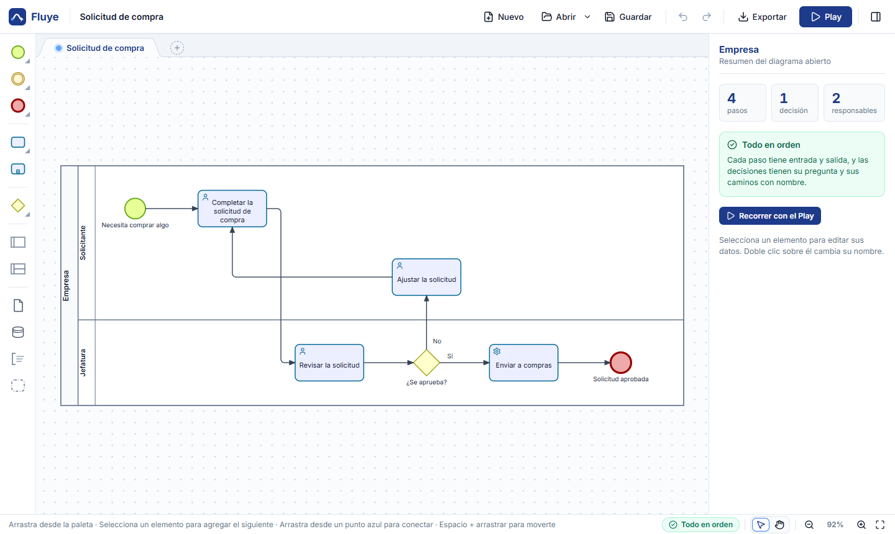
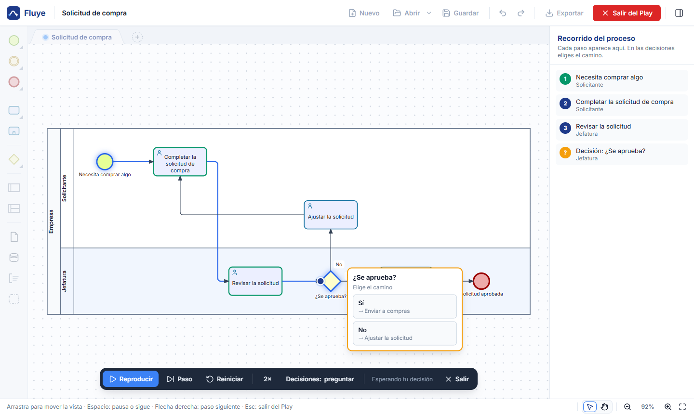
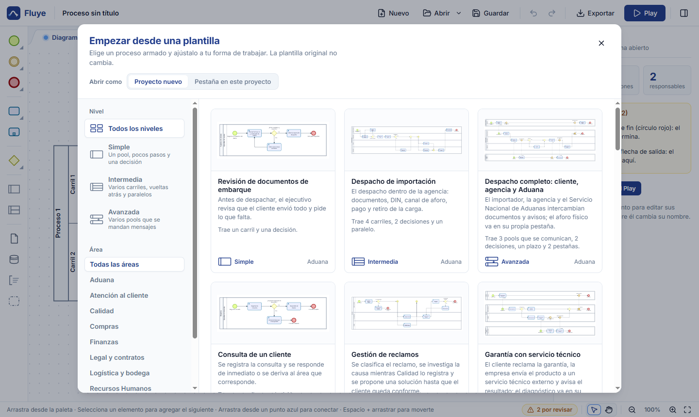
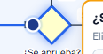
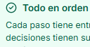
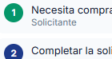
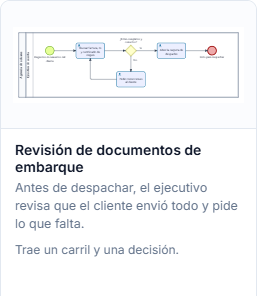
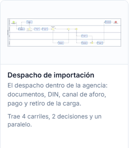
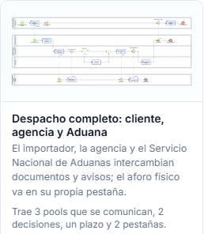
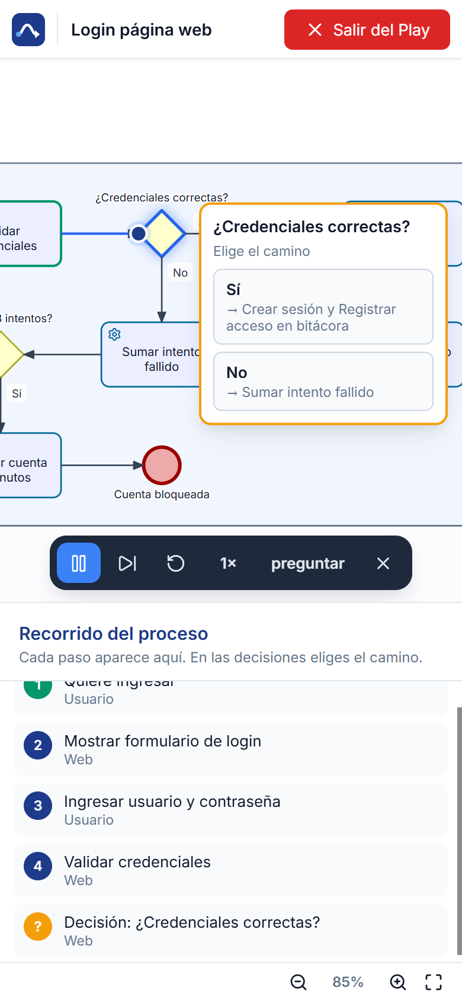

Fluye
Dibújalo.
Míralo fluir.
Fluye es un modelador de procesos BPMN para Windows, gratis y de código abierto. Dibujas el proceso, pulsas Play y ves si llega al final.
Versión 1.0 · Windows 10 y 11 · sin pedir administrador



Pulsa Play
La ficha recorre el proceso paso a paso, se detiene en cada decisión para que elijas el camino y avisa si algo se atasca: un paso sin salida, un paralelo que nunca se junta o un mensaje que nunca llega.
¿Se aprueba? Elige el camino
Recorrido del proceso
Qué trae Fluye
Arrastras pasos

, el panel avisa qué falta
, el Play anota cada fase
y todo se exporta a Word, PDF o web.Abre y guarda archivos .bpmn estándar, también los que exportan otras herramientas de modelado, con sus colores. Trae varios diagramas por archivo, cada uno en su pestaña, y corrige la ortografía en español sin internet.
Probar en el navegador33plantillas listas
- Aduanaembarques y despachos
- Comprascotizaciones

- Finanzasfacturas y cobranza
- Ventasdel pedido al cierre
- Personasvacaciones e ingresos

- Soportetickets e incidentes
- Atenciónconsultas y reclamos
- Bodegadespachos y devoluciones

- Legalcontratos y firmas
- Calidadauditorías
- Webinicio de sesión y tienda
- 3niveles: simple, intermedia, avanzada
Así se usa
Proceso nuevo
0 pasos0 decisiones2 carriles
Para revisar (2): falta el fin y el inicio no tiene salida.
Primero eliges una plantilla o una hoja en blanco.
Solicitud de compra
4 pasos1 decisión2 carriles
Para revisar (1): una decisión tiene un camino sin nombre.
Luego dibujas y el panel te avisa qué falta.
Solicitud de compra
5 pasos1 decisión2 carriles
Todo en orden
Recorrer con el Play
Después pulsas Play y eliges cada camino.
Solicitud de compra
6 fases1 decisión0 problemas
Llegó al final
Exportado: Solicitud de compra.docx
Al final lo compartes en Word, PDF o web.
Gratis, abierto
y en español
Cómo instalarlo
Descarga el instalador y ábrelo con doble clic: se instala para tu usuario, sin pedir administrador, y queda en el escritorio y en el menú Inicio. Si Windows muestra “Windows protegió su PC”, pincha Más información y luego Ejecutar de todas formas; pasa la primera vez porque el instalador todavía no va firmado.
Código abierto
Fluye tiene licencia MIT: puedes usarlo, estudiarlo, cambiarlo y repartirlo, también en tu empresa. Está hecho con Electron, diagram-js y bpmn-moddle, y las sugerencias y reportes de errores son bienvenidos en GitHub.

Fluye in English
Fluye (“it flows”) is a free, open-source BPMN 2.0 process modeler for Windows. Draw pools, lanes, tasks, gateways, events and message flows; press Play to walk through the process token by token, pick a path at each gateway and get warned about dead ends and deadlocks.
It opens and saves standard .bpmn files, ships 33 templates, and exports to BPMN, PNG, SVG, PDF, Word and a single-file interactive web page that includes the Play. The interface is in Spanish. MIT licensed.
Download for Windows Try it in your browser Source on GitHub